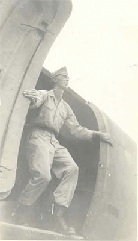
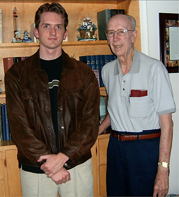

About the Author
As a life-long World War II buff, I was largely unaware of the exploits of the Pacific Paratroopers until the age of 20, when meeting my great-uncle Harold Hurst for the first time. I interviewed him with a tape recorder, and during this interview he told me how his unit, the 11th Airborne Division, rescued thousands of Allied prisoners from the Japanese in daring raid during the liberation of the Philippines. I was intrigued by this, so as a college student I researched it more, eventually writing a paper about this event: the Los Baños Raid. As a film student, I was determined to produce documentaries for the History Channel, so after graduating and moving to Los Angeles, I began petitioning the network and local production companies to produce a show about this incredible yet overlooked event. Eventually my efforts paid off, and I was hired to produce my idea into a documentary. The finished show, "Rescue at Dawn: The Los Baños Raid," premiered on the History Channel in February 2004. Since then, I have spent countless hours researching the history of the Pacific Paratroopers.

Sgt. Harold Hurst,
11th Airborne Division,
posing in the doorway
of a C-47, circa 1945.
(Author's collection)

The author and Harold Hurst at his home in Heyburn,
Idaho, March 2004. (Author's collection)